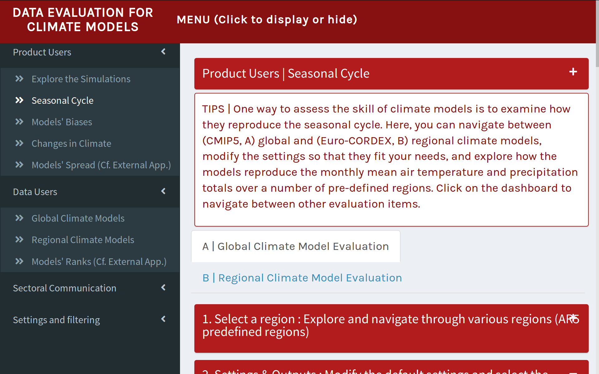
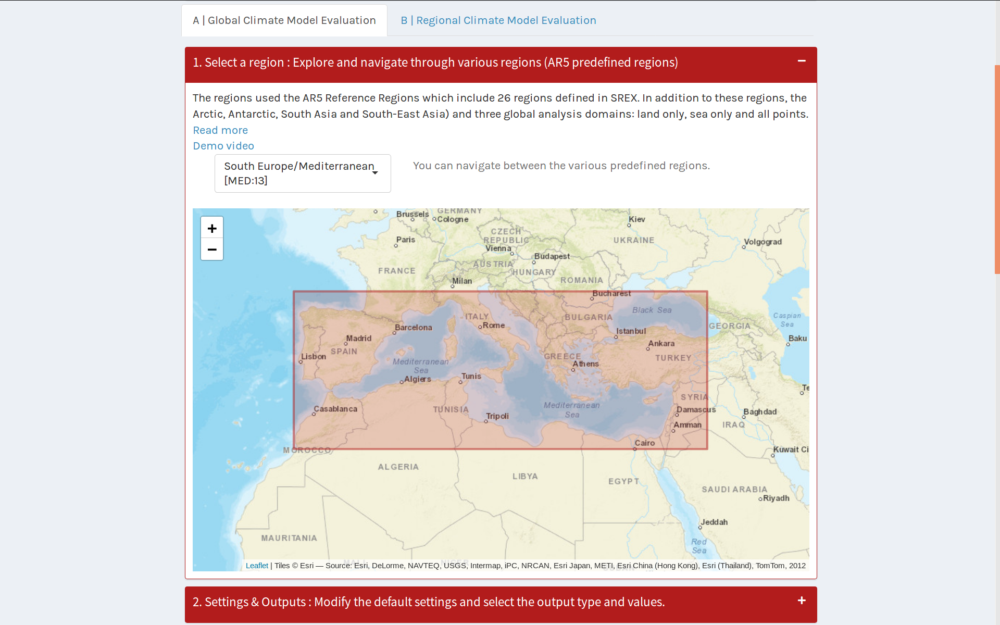
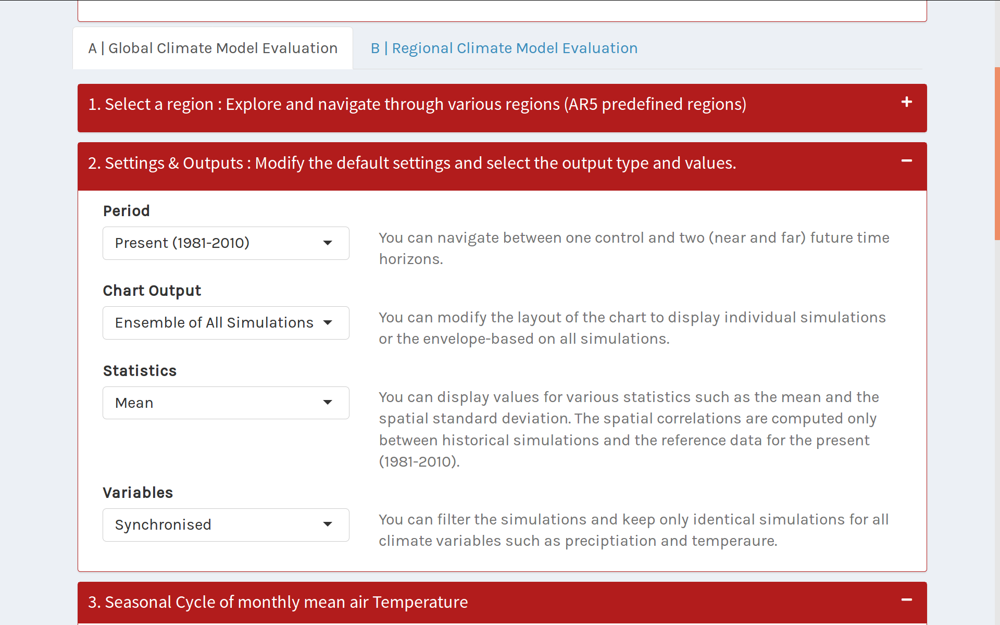
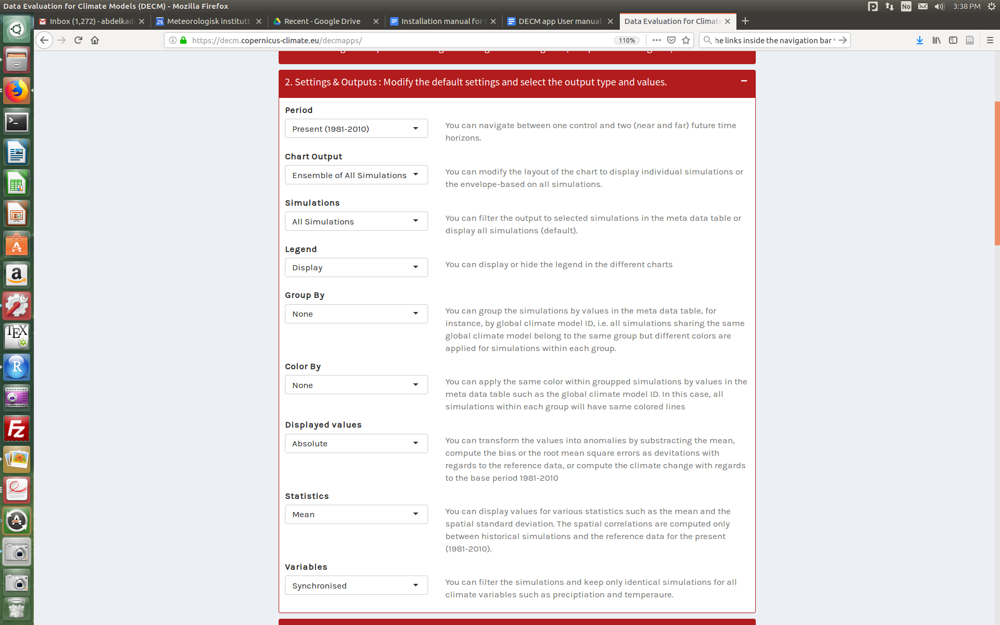
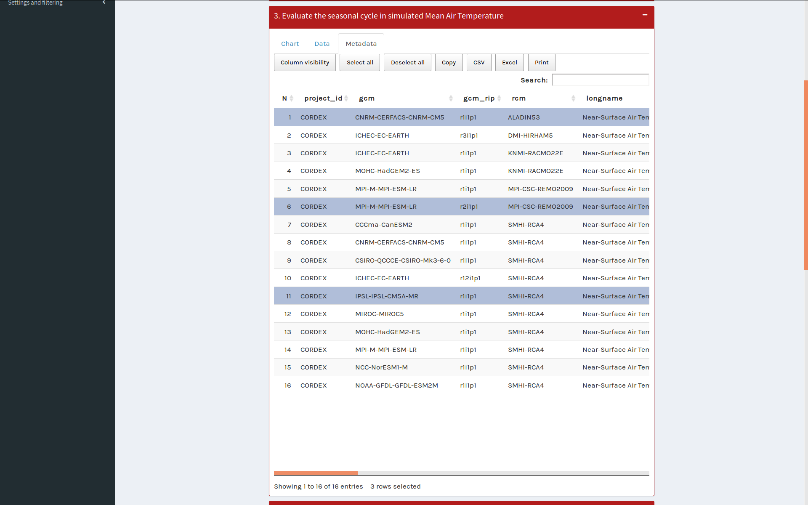
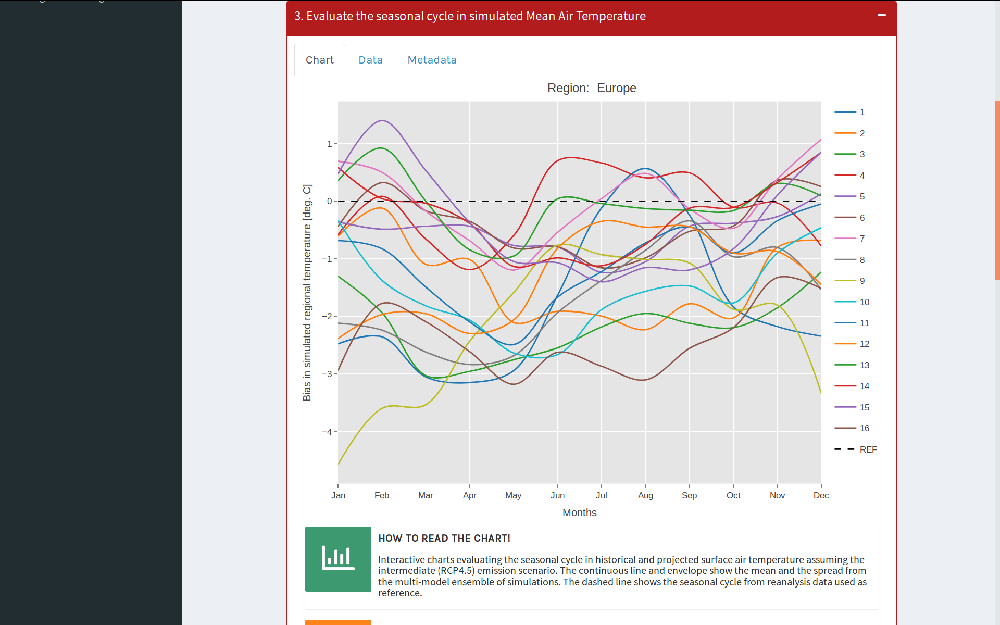
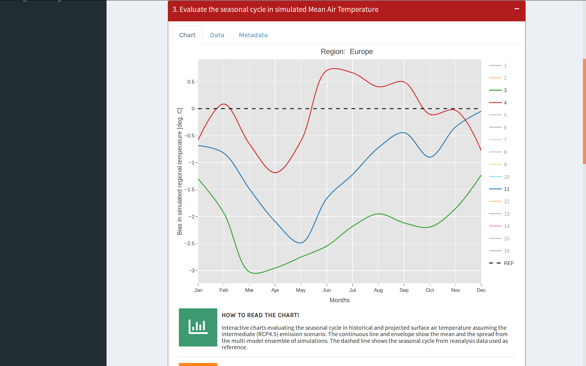
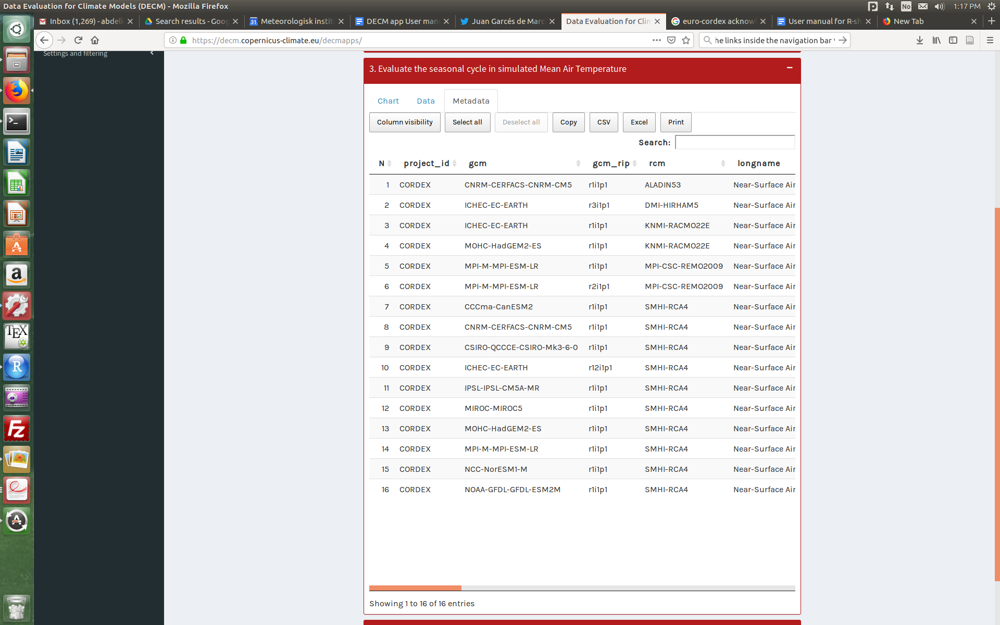
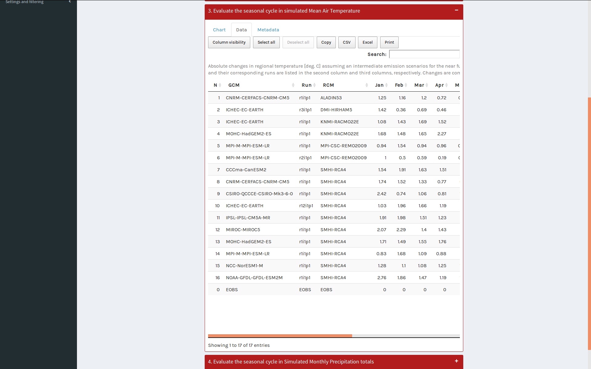

DECM-App User Manual - last update 31/01/2019 /
User manual for data evaluation of climate models
Introduction
The climate models constitute powerful tools for climate projection to provide the best representation of the projected climate signal over a region of interest. The climate simulations evaluated here are based on the Coupled Model Intercomparison Project-Phase 5 (CMIP5) and the European branch of the Coordinated Regional Climate Downscaling Experiment over Europe (EURO-CORDEX) to produce the best estimates of global, regional and local climate signals that in turn can be used in impact studies.
To assess the large volume of climate model simulations, we propose a straightforward comparison of climate models' ability in reproducing statistical properties such as the seasonal cycle, based on large multi-model ensembles of climate model simulations and the predefined IPCC and European regions. The DECM app contains figures and tables showing examples of simulated vs observed-based datasets of CMIP5 and EURO-CORDEX simulations for various regions and domains
The functions are categorised in two main groups such as 'Product Users' and 'Data Users'. The 'Product users' group focuses on fancy and interactive graphics of outputs, while the 'Data Users' group is more devoted to output data tables.
You can click on the dashboard to navigate between other items.
The regional climate model simulations constitute a better representation of regional climate outcomes than global climate outputs as they are run on higher spatial resolution, and include more local processes to provide the best representation of the climate signal over a region of interest. The climate simulations evaluated here are based on the Coordinated Regional Climate Downscaling Experiment over Europe (EURO-CORDEX) to produce the best estimates of regional/local climate signal that in turn can be used in impact studies.
This document will guide on how to use the DECM-App and related functionalities through various frequently asked questions.
Table of contents
Introduction
What is DECM prototype?
How to launch the DECM-App?
Which type of user am I?
How is the prototype structured?
What are the different menu items?
What strategy is the DECM-App based on?
1. Select a domain or a Region of interest.
2. Modify the Settings.
3. Visualize the results
How can I switch between individual and ensemble of multi-model climate simulations?
How to select a specific climate model simulation (regional or global)?
What information is displayed on the charts?
What information is displayed on the maps?
What are the different datasets involved?
Does DECM-App have a Blog page?
How to get the metadata related to climate model simulations?
How to read the charts?
Which datasets are included?
What are the different types of charts?
What are the different types of tables?
How do you acknowledge results obtained from DECM-App?
What is DECM prototype?
DECM stands for “Data Evaluation for Climate Models” which is a proof-of-concept and a prototype in order to make user-friendly evaluations and quality control (EQC) of climate model framework for users of climate projection data (https://climate.copernicus.eu).
DCEM was built from user requirement perspective, based on climate data and catalogues in order to fill (scientific) gaps in the delivery of climate model data (CMIP and CORDEX). The prototype was part of the Evaluation and Quality Control (EQC) block of the Copernicus Climate Change Service (C3S, http://decm.climate.copernicus.eu)
How to launch the DECM-App?
The DECM-App is accessible via the website https://decm.copernicus-climate.eu/ hosted at ECMWF. You can either use the embedded DECM App on that website or open a full-screen version (https://decm.copernicus-climate.eu/decmapps/ ) which works for all devices i.e Desktops, Tablets, Mobile phones, etc. Nevertheless, the user interface has been optimised for Desktop users. For mobile phones, we recommend using the full screen version, however, some of the figures or tables could be very small or not visible.
Which type of user am I?
Two types of potential users of the developed application have been identified. The first category refers to as “Product-User” oriented group, while, the second category refers to as ‘Data-User’ oriented group. The ‘Product-User’ is often interested in summarising climate information in terms of charts and infographics, while, the Data-User is more interested in exploring the climate model simulations by looking at the data and metadata at the same time. More details can be found in the following web-address.
https://climate.copernicus.eu/users-shaping-new-climate-data-store
How is the prototype structured?
The way the prototype is organised depends on the user category, i.e. Product-User and Data-Users and what you are interested in. Once you choose one of the two categories as described in Q2 (link to this question), you can navigate between various options, maps, charts, and data and meta tables, etc. The selected item from the menu is indicated on top of the page such as Seasonal Cycle, Models’ biases, Changes in Climate, etc. For each item, you can choose between global (A) or regional (B) climate model evaluation. In most cases, there are three main steps to follow. First, you need to select a domain or a region of interest. Second, modify the settings so that they fit your needs. Finally, check the figures along with tips on how to read and extract key messages from the results.
What are the different menu items?
The Menu is organised based on the two main group of users such as Product-User and Data-User. Within the Product-User mode, you can navigate between Explore the simulations, and evaluate the Seasonal Cycle, Models’ biases, and assess Changes (present and future) in climate based on multi-model ensembles of simulations. You can also assess the models’ spread and perform a ranking of the climate models regarding various criteria using the DECMeval external app at https://esdlab.met.no/gcmeval/. The Data-Users category, however, focus directly on raw global and regional climate models’ evaluation. This group uses the same modules as those in the first category but the modules are organised differently. The main focus is to evaluate climate model data sets and to produce data output tables with some skill scores.
 |
Figure : Data Evaluation for Climate Models dashboard. Screenshot of the dashboard sidebar displaying the different items and categories implemented in the DECM-App. |
What strategy is the DECM-App based on?
The strategy for climate model data evaluation (global and regional climate model outputs) we adopted is very simple and consists of three main steps.
1. Select a domain or a Region of interest.
The first step consists of selecting a region or a domain of interest from various predefined ones. For GCM data evaluation, we used same reference regions as in the IPCC’s fifth assessment report from 2013 (AR5). These consist of 26 regions defined in the IPCC report on climate extremes from 2012 (SREX), including the Arctic, Antarctic, South Asia, and South-East Asia and three global analysis domains: Land only, sea only (west indian ocean) and all points (Global).
 | 
|
Example of displayed domain such as “South Europe/Mediterranean” domain on which the statistics are computed. | Example of displayed region showing the delimitation of the region of interest such as “Finland” on which the statistics are computed. |
Figure : Examples showing selected region or domain. |
 |
Figure : Example of ‘Product-User settings window which includes the time period, the chart output, the statistics, and variables whether they are synchronised or not. You can navigate between one control and two (near and far) future time horizons. You can additionally modify the layout of the chart to display individual simulations or the envelope-based on all simulations. You can also display values for various statistics such as the mean and the spatial standard deviation. The spatial correlations are computed only between historical simulations and the reference data for the present (1981-2010). Finally, you can filter the simulations and keep only identical simulations for all climate variables such as precipitation and temperature. |
2. Modify the Settings.
In this box, you can modify the settings so that you fit in your needs. The list of settings depends on the type of the user and the selected menu item. Generally, the list of settings is simplified for Product Users (PU) and is more complex for Data-Users. The users can select among various options such as the time Period, the Chart Output type, computed Statistics (e.g. mean, correlation), and synchronized or not climate Variables, which means that the same set of models are selected for both temperature and precipitation.
3. Visualize the results
The visualisation is automatically updated whenever one (or more) argument(s) in the list of settings changes. There are two types of results depending on the type of users such as Charts (Product-User group) and Tables (Data-User group). The charts include time series, scatter plots, and Box-Plots to display the statistics computed from the grid cells encompassing the selected domain.
 |
Figure : Example of ‘Data-User settings window which contains an extended list of arguments than those used in the “Product-User” group such as “Group-By”, “Color-By”, and “Displayed values”. You can navigate between one control and two (near and far) future time horizons. You can modify the layout of the chart to display individual simulations or the envelope-based on all simulations. You can filter the output to selected simulations in the metadata table or display all simulations (default). You can display or hide the legend in the different charts. You can group the simulations by values in the metadata table, for instance, by global climate model ID, i.e. all simulations sharing the same global climate model belong to the same group but different colors are applied for simulations within each group. You can apply the same color within grouped simulations by arguments in the metadata table list such as the global climate model name. In this case, all simulations within each group will have same colored lines. You can transform the values into anomalies by subtracting the mean, compute the bias or the root mean square errors as deviations with regards to the reference data, or compute the climate change with regards to the base period 1981-2010. You can display values for various statistics such as the mean and the spatial standard deviation. The spatial correlations are computed only between historical simulations and the reference data for the present (1981-2010). Finally, you can filter the simulations and keep only identical simulations for all climate variables such as precipitation and temperature. |
How can I switch between individual and ensemble of multi-model climate simulations?
This feature is by far the most important as it is very innovative. You can switch between individual model simulations or the full ensemble of climate model simulations belonging to the same family of models. The individual simulation allows selecting or deselecting few simulations directly from the chart (legend). The multi-model ensemble allows plotting confidence zones (e.g. 5 % confidence level) in order to assess the mean and the spread of all or selected simulations.
How to select a specific climate model simulation (regional or global)?
There are two ways to select a specific or a list of climate models. This can be done in the metadata table (available for Data-Users only) or from the Output Chart (using interactive functions). There is also an additional selection between global and regional climate models’ families that can be done inside the output web-pages as well (e.g. ‘A’ Global and ‘B’ Regional). To select a specific climate model, you first choose between A | Global climate Model Evaluation and B | Regional Climate Model Evaluation on top of each page. The selection can also be done from the chart legend by ‘simple’ clicking. To select or deselect you need to click on the specific simulation. To isolate a specific simulation you need then to double click, and that is it. To come back to the original state showing all simulations, double click one more time on the selected one.
 | 
|
Selecting few climate model simulations from the metadata table. Example of selecting simulations 1, 6, 11 in the table. | Bias in regional precipitation over European domain by the climate model simulations 1, 6, and 11 as shown in metadata table (continuous lines). The dashed line shows corresponding results estimated from reanalysis data as reference (ERAINT). |
Figure : Example of selecting few simulations from the metatable |
 |  |
Bias in regional temperature over Europe as simulated by the all EURO-CORDEX climate model simulations. The dashed line shows corresponding results from reanalysis data as reference (ERAINT).
| Bias in regional temperature as simulated by the climate model simulations 3, 4, and 11 over European domain. The selected simulations are highlighted in the legend (continuous lines, obtained by hiding (clicking on) the others). The dashed line shows corresponding results from reanalysis data as reference (ERAINT). |
Examples of selecting a specific simulation from the chart. |
You can modify the type of output from the "Settings & Outputs" box and choose between options of showing individual simulations, envelope of the ensemble model simulations, or box plots. They let you show anomalies and group/colour the results according to the metadata.
What information is displayed on the charts?
The charts display information about the computed statistics over the selected domain or region. There are two ways of displaying information on the charts: Basic chart lines and more advanced charts such as ‘Box-Plots’. The latter shows a simple way of representing results in a box (i.e. rectangle) in which the whiskers represent the first (25 %) and third quartiles (75 %), with a horizontal line inside to indicate the median value (50 %). The minimum and maximum values are shown as horizontal lines laying outside the box. All the charts are interactive. You can display or hide some datasets in the legend, read values on hover, zoom in and out, and download the chart as png. You can also compare data on hover with observations.
What information is displayed on the maps?
The maps show the delimitation of the selected region or domain.
What are the different datasets involved?
The prototype shows results from raw global and regional climate models and local (obtained via empirically-downscaling model over Norway). The regional climate model output corresponds to the raw datasets and were not subject to any correction e.g. bias-correction. The reason behind this choice is to let you discover the biases and exclude the effect of the bias-correction on the model results being evaluated.
Does DECM-App have a Blog page?
Yes, we do have a Blog page which contains some news and responses to feedbacks or requests. You can have a look at the following web-address to find recent news and updates: https://decm.copernicus-climate.eu/blog/index.html. However, the blog page is now static and will not longer be updated.
How to get the metadata related to climate model simulations?
Metadata table presents information about the data (meta) that can additionally be used to help interpreting the results. The metadata table is also helpful for comparing between climate model setups and configurations. It also contains a link to a referenced paper and email address. There are more than 50 elements of meta information that have been collected and combined from data files and metadata tables provided by the IPCC, as it is the case for CMIP5 simulations. It contains additional information derived from the original meta values such as a rough estimation of the horizontal resolution (spatial and temporal) on which the models are compared and their corresponding original resolution used to run driving models. The meta information can be used to group the simulations based on a specific meta values. This is done using the Group-by option in the settings of the Data-User group.
How to read the charts?
All the charts produced by the app are interactive, i.e. you can interact with the content. The main interaction is based on selecting/deselecting few or all climate model simulations from the list in the legend section of the chart. All the charts have a caption as well as tips on how to modify the chart to meet your needs, and guidance on how to use it, along with other recommendations. The values displayed on the charts depend on the pre-selection of settings, menu item, and climate model family (i.e. regional or global). By default, the app evaluates the bias in historical and projected surface air temperature, assuming the intermediate (RCP4.5) emission scenario from the CMIP5 multi-model ensemble. Usually, continuous lines refer to statistics of climate model simulations, and dashed lines refer to same statistics for a reference dataset (i.e. reanalyses). The envelopes usually show the mean and the spread from the multi-model ensemble of simulations. However, there are some special cases as for example the box-plot type, which represents a description of the various quartiles estimated from the multi-model ensemble.
Which datasets are included?
The datasets include projected temperature (air mean 2m-temperature) and precipitation (monthly sums of total precipitation). These projections were taken from the full CMIP5 and un-adjusted EURO-CORDEX climate model simulations. Models’ output were regridded into a common spatial resolution (e.g. 2.5 deg for GCMs and 0.5 for RCMs) before the statistics were derived. The temporal resolution provided is monthly time steps. The spatio-temporal resolution allows performing quick climate analyses, such as studying the seasonal cycle, changes in climate, and evaluate model biases. The datasets also include metadata which gives additional information about the simulations, such as institutes names, regional climate models names, driven global climate model names, horizontal and vertical resolutions, forcings, physics version, number of vertical levels in the simulations (for GCMs), etc.
What are the different types of charts?
There are several chart types depending on your requirements and needs that one can explore. The main ones are ‘Seasonal-Cycle plots’ which are used to evaluate how good the models are in reproducing seasonality when compared to a reference dataset (or pseudo-observations such as reanalyses data sets) of various statistics such as bias, spatial correlation between simulated and reference data. The ‘Scatter-plots’ are generally used to explore simultaneously changes in temperature and precipitation. Then, you can explore the cloud of data points estimated for each individual simulations and the multi-model ensemble spread defined by three confidence levels. This evaluation allows you to identify models simulating high/low extremes from the multi-model ensemble spread of climate model simulations. The spread also gives an indication of how selecting one or a few models may affect the projected outcome. The ‘Box-Plots’ are also powerful visualization to identify average and extreme simulations based on the first (25 %) and third (75 %) quartiles, including the median (50 %) of distribution of model statistics. All charts are downloadable as PNG format so that you can include them in your reports and documents.
What are the different types of tables?
There are two types of tables: Input and output tables. The input tables contain information about the meta data, while, the output-tables contain statistics based on your choice of settings. Most of the tables are interactive and searchable, i.e. you can filter the row or columns by some criteria. The tables are exportable and you can copy or download the results as CSV or Excel formats, or send them directly to the printer. With the ‘Column-visibility’ option, you can hide columns that you are not interested in before exporting the results.
 |
Example of metadata table showing the name of the driving project, the name of the global climate model, the name of the experiment, the name of the regional climate model, etc. |
 |
Example of data table showing absolute changes in regional temperature [deg. C] assuming an intermediate emission scenarios for the near future (2021-2050) averaged over the European domain. The climate models and their corresponding runs are listed in the second column and third columns, respectively. Changes are computed with regards to the reference period 1981-2010. |
How do you acknowledge results obtained from DECM-App?
We acknowledge the COPERNICUS CLIMATE CHANGE Program's Working Group on
“Data Evaluation for Climate Models” on making the tool available. We also thank
the CMIP5 and EURO-CORDEX climate modelling groups for producing and
making available their model output.”